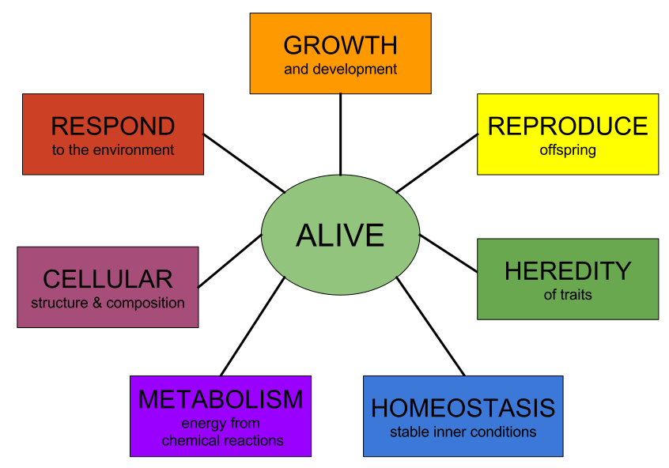

The definition of life has long been a challenge for scientists and philosophers,
with many varied definitions put forward.[16][17][18] This is partially because life is a process,
not a substance. This is complicated by a lack of knowledge of the characteristics of living entities,
if any, that may have developed outside of Earth. Philosophical definitions of life have also been put forward,
with similar difficulties on how to distinguish living things from the non-living.
Legal definitions of life have also been described and debated, though these generally focus on
the decision to declare a human dead, and the legal ramifications of this decision.
Since there is no unequivocal definition of life, most current definitions in biology are descriptive.
Life is considered a characteristic of something that preserves,
furthers or reinforces its existence in the given environment.
This characteristic exhibits all or most of the following traits:
-
Homeostasis: regulation of the internal environment to maintain a constant state; for example, sweating to reduce temperature
-
Organization: being structurally composed of one or more cells – the basic units of life
-
Metabolism: transformation of energy by converting chemicals and energy into cellular components (anabolism) and decomposing organic matter (catabolism). Living things require energy to maintain internal organization (homeostasis) and to produce the other phenomena associated with life.
-
Growth: maintenance of a higher rate of anabolism than catabolism. A growing organism increases in size in all of its parts, rather than simply accumulating matter.
-
Adaptation: the ability to change over time in response to the environment. This ability is fundamental to the process of evolution and is determined by the organism's heredity, diet, and external factors.
-
Response to Stimuli: a response can take many forms, from the contraction of a unicellular organism to external chemicals, to complex reactions involving all the senses of multicellular organisms. A response is often expressed by motion; for example, the leaves of a plant turning toward the sun (phototropism), and chemotaxis.
-
Reproduction: the ability to produce new individual organisms, either asexually from a single parent organism or sexually from two parent organisms.

These complex processes, called physiological functions, have underlying physical and chemical bases,
as well as signaling and control mechanisms that are essential to maintaining life.
From a physics perspective, living beings are thermodynamic systems with an organized molecular structure that can reproduce itself and evolve as survival dictates.[32][33] Thermodynamically, life has been described as an open system which makes use of gradients in its surroundings to create imperfect copies of itself.[34] Hence, life is a self-sustained chemical system capable of undergoing Darwinian evolution.[35][36] A major strength of this definition is that it distinguishes life by the evolutionary process rather than its chemical composition.[37]
Others take a systemic viewpoint that does not necessarily depend on molecular chemistry. One systemic definition of life is that living things are self-organizing and autopoietic (self-producing). Variations of this definition include Stuart Kauffman's definition as an autonomous agent or a multi-agent system capable of reproducing itself or themselves, and of completing at least one thermodynamic work cycle.[38] This definition is extended by the apparition of novel functions over time.[39]
Whether or not viruses should be considered as alive is controversial. They are most often considered as just replicators rather than forms of life.[40] They have been described as "organisms at the edge of life"[41] because they possess genes, evolve by natural selection,[42][43] and replicate by creating multiple copies of themselves through self-assembly. However, viruses do not metabolize and they require a host cell to make new products. Virus self-assembly within host cells has implications for the study of the origin of life, as it may support the hypothesis that life could have started as self-assembling organic molecules.[44][45][46]
To reflect the minimum phenomena required, other biological definitions of life have been proposed,[47] with many of these being based upon chemical systems. Biophysicists have commented that living things function on negative entropy.[48][49] In other words, living processes can be viewed as a delay of the spontaneous diffusion or dispersion of the internal energy of biological molecules towards more potential microstates.[16] In more detail, according to physicists such as John Bernal, Erwin Schrödinger, Eugene Wigner, and John Avery, life is a member of the class of phenomena that are open or continuous systems able to decrease their internal entropy at the expense of substances or free energy taken in from the environment and subsequently rejected in a degraded form.[50][51]
Living systems are open self-organizing living things that interact with their environment. These systems are maintained by flows of information, energy, and matter.
Budisa, Kubyshkin and Schmidt defined cellular life as an organizational unit resting on four pillars/cornerstones: (i) energy, (ii) metabolism, (iii) information and (iv) form. This system is able to regulate and control metabolism and energy supply and contains at least one subsystem that functions as an information carrier (genetic information). Cells as self-sustaining units are parts of different populations that are involved in the unidirectional and irreversible open-ended process known as evolution.[52]
Some scientists have proposed in the last few decades that a general living systems theory is required to explain the nature of life.[53] Such a general theory would arise out of the ecological and biological sciences and attempt to map general principles for how all living systems work. Instead of examining phenomena by attempting to break things down into components, a general living systems theory explores phenomena in terms of dynamic patterns of the relationships of organisms with their environment.[54]
-
Gaia hypothesis: The idea that the Earth is alive is found in philosophy and religion, but the first scientific discussion of it was by the Scottish scientist James Hutton. In 1785, he stated that the Earth was a superorganism and that its proper study should be physiology. Hutton is considered the father of geology, but his idea of a living Earth was forgotten in the intense reductionism of the 19th century.[55]:10 The Gaia hypothesis, proposed in the 1960s by scientist James Lovelock,[56][57] suggests that life on Earth functions as a single organism that defines and maintains environmental conditions necessary for its survival.[55] This hypothesis served as one of the foundations of the modern Earth system science.
-
Nonfractionability: The first attempt at a general living systems theory for explaining the nature of life was in 1978, by American biologist James Grier Miller.[58] Robert Rosen (1991) built on this by defining a system component as "a unit of organization; a part with a function, i.e., a definite relation between part and whole." From this and other starting concepts, he developed a "relational theory of systems" that attempts to explain the special properties of life. Specifically, he identified the "nonfractionability of components in an organism" as the fundamental difference between living systems and "biological machines."[59]
-
Life as a property of ecosystems: A systems view of life treats environmental fluxes and biological fluxes together as a "reciprocity of influence,"[60] and a reciprocal relation with environment is arguably as important for understanding life as it is for understanding ecosystems. As Harold J. Morowitz (1992) explains it, life is a property of an ecological system rather than a single organism or species.[61] He argues that an ecosystemic definition of life is preferable to a strictly biochemical or physical one. Robert Ulanowicz (2009) highlights mutualism as the key to understand the systemic, order-generating behavior of life and ecosystems.[62]
-
Complex systems biology: Complex systems biology (CSB) is a field of science that studies the emergence of complexity in functional organisms from the viewpoint of dynamic systems theory.[63] The latter is also often called systems biology and aims to understand the most fundamental aspects of life. A closely related approach to CSB and systems biology called relational biology is concerned mainly with understanding life processes in terms of the most important relations, and categories of such relations among the essential functional components of organisms; for multicellular organisms, this has been defined as "categorical biology", or a model representation of organisms as a category theory of biological relations, as well as an algebraic topology of the functional organization of living organisms in terms of their dynamic, complex networks of metabolic, genetic, and epigenetic processes and signaling pathways.[64][65] Alternative but closely related approaches focus on the interdependance of constraints, where constraints can be either molecular, such as enzymes, or macroscopic, such as the geometry of a bone or of the vascular system.[66]
-
Darwinian dynamic: It has also been argued that the evolution of order in living systems and certain physical systems obeys a common fundamental principle termed the Darwinian dynamic.[67][68] The Darwinian dynamic was formulated by first considering how macroscopic order is generated in a simple non-biological system far from thermodynamic equilibrium, and then extending consideration to short, replicating RNA molecules. The underlying order-generating process was concluded to be basically similar for both types of systems.[67]
-
Operator theory: Another systemic definition called the operator theory proposes that "life is a general term for the presence of the typical closures found in organisms; the typical closures are a membrane and an autocatalytic set in the cell"[69] and that an organism is any system with an organisation that complies with an operator type that is at least as complex as the cell.[70][71][72][73] Life can also be modeled as a network of inferior negative feedbacks of regulatory mechanisms subordinated to a superior positive feedback formed by the potential of expansion and reproduction.[74]